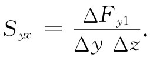
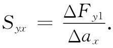
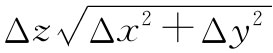
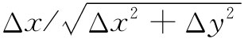
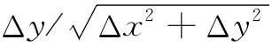
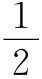

迄今我们所描述的对称张量都是在一个矢量与另一个矢量建立联系的过程中作为系数产生的。现在我们很想考察一个具有不同物理意义的张量——应力 张量。假设有一块被施以各种力的固体，我们说其内部会有各种“应力”，这意思是指，在材料中的相邻部分间存在一些内力。当我们在§12-3中考虑被伸展的膜中的表面张力时，就曾稍微谈及在二维情况下的这种应力。现在将看到，在三维物体的材料中内力可以由一个张量来描述。
考虑某种弹性材料——比如说是一大块果子冻——的物体。如果把这块材料切开，则切面每一边的物质一般都会受到内力作用而引起位移。在切开前，材料中的两部分间必然有力把材料维持在其固定位置，我们可以用这些力来定义应力。假设我们正在考察一块垂直于x轴的假想平面——像图31-5中的σ面——并询问在这个面上穿过小面积ΔyΔz的力。设在这一面积左边的材料施力ΔF1 于其右边的材料，如图（b）所示。当然，还有一个反作用力-ΔF1 施于左边的材料上。如果该面积足够小，则我们预期ΔF1 与面积ΔyΔz成正比。
图31-5 σ平面左边的材料穿过面积ΔyΔz施力ΔF1 于该平面右边的材料上
你已经熟悉了应力中的一种——静止液体中的压强。在那里，力等于压强乘面积并与面积元垂直。对于固体——也对于运动中的黏滞性液体——来说，力就不一定与该面垂直，除了压强（正的或负的）之外还会有剪切 力（所谓“剪切力”，指的是穿过面的力的切向 分量）。力的所有三个分量都必须计算在内。也应该注意，如果我们在某个其他取向的平面上切割，则这些力将不相同。对于内应力的完整描述需要有一个张量。
图31-6 穿过与x轴正交的面积元ΔyΔz的力ΔF1 可分解成三个分量ΔFx1 ，ΔFy1 和ΔFz1
我们按照下述办法对应力张量下定义：首先，我们想象一个垂直于x轴的切面并把穿过这切面上的力ΔF1 分解成它的分量ΔFx1 ，ΔFy1 和ΔFz1 ，如图31-6所示。这些力对面积ΔyΔz的比值，分别被称为Sxx ，Syx 和Szx 。例如，

第一个下脚标y指力的分量方向；第二个下脚标x指垂直于该面积的方向。如果你愿意，还可以把该面积ΔyΔz写成Δax ，表明是一个垂直于x轴的面积元。于是

其次，我们设想一个垂直于y轴的想象的切面。穿过一小面积ΔxΔz将有力ΔF2 。再把这个力分解成三个分量，如图31-7所示，并定义三个应力分量Sxy ，Syy ，Szy ，作为在那三个方向上单位面积的力。最后，我们做一个垂直于z轴的想象切面并定义三个分量Sxz ，Syz 和Szz 。因此，我们就有了九个数值：
图31-7 穿过垂直于y轴的面积元的力被分解成三个互相垂直的分量
现在要来证明，这九个数值足以完整地描述应力的内部状态，而且Sij 的确是一个张量。假设我们想知道穿过一个以某个任意角度取向的面积的力，能否从Sij 求得它呢？能，只要按照下述办法：试想象一个小小的立体图形，在另加的面内有一个N面，而其他各面则都垂直于坐标轴。假如这个N面碰巧平行于z轴，则会有如图31-8所示的那个三角图形（这是有些特殊的情况，但将足以充分说明普遍的方法）。既然作用于图31-8中那个小三角体上的各应力是平衡的（至少在无限小尺寸的极限内），因而施于其上的总力就必须等于零。我们直接从Sij 知道了在垂直于各坐标轴的那些面上的力，它们的矢量和就应等于作用在N面上的力，因而我们可用Sij 来表示这个力。
图31-8 把穿过N面（其单位法线为n）的力ΔFn 分解成各分量
关于作用在该小三角形体积上的表面 力处于平衡这一假设，其中我们忽略了任何可能会存在的其他一些彻体 力，诸如重力或膺力，如果我们的坐标系不是一个惯性坐标系的话就会存在膺力。然而，应该注意，这种彻体力将与那个小三角体的体积 、因而也与ΔxΔyΔz成正比，而所有的表面力则均与诸如ΔxΔy，ΔyΔz等面积成正比。所以，如果我们把楔形物的尺寸取得足够小，则同表面力相比彻体力就总是可以被忽略的。
现在让我们把施于该小楔形物上的力都相加起来。首先考虑x分量，那是五个部分之和——从每一个面各有一部分。然而，如果Δz足够小，那么作用于（与z轴垂直的）那两个三角形上的力就会相等相反，因而可以将其忘却掉。作用于底面矩形上的力其x分量为
ΔFx2 =Sxy ΔxΔz.
作用于垂直矩形上的力为
ΔFx1 =Sxx ΔyΔz.
上述两力必须等于穿过N面向外 的力的x分量。令n为垂直于N面的单位矢量，并令作用于此面上的力为ΔFn ，于是我们有
ΔFxn =Sxx ΔyΔz+Sxy ΔxΔz.
穿过这个平面的应力的x分量Sxn 等于ΔFxn 除以面积 ，即
由于 就是n与y轴间夹角θ的余弦，如图31-8所示，因而我们可把它写成ny ，即n的y分量。同理， 就是sinθ=nx 。我们便可将上式写成
Sxn =Sxx nx +Sxy ny .
如果现在推广至一个任意表面元，就该得到
Sxn =Sxx nx +Sxy ny +Sxz nz ，
或一般地，
我们能够 求得以Sij 表示的穿过任何面元的力，因而Sij 的确完整地描述了材料内部的应力状态。
式（31.24）表明，张量Sij 使力Sn 与单位矢量n相联系，就好像αij 使P与E有关那样。既然n和Sn 都是矢量，所以Sij 的各分量就必然像张量那样随坐标系的改变而作变换。因此，Sij 的确是一个张量。
我们也可通过考察作用于一个小立方体材料上的力来证明Sij 是一个对称 张量。假设取一个小立方体，使其各个面的取向平行于我们的坐标轴，并从一个截面上去考察它，如图31-9所示。若令这个立方体的每个边长为一个单位，则作用于与x和y轴正交的那些面上的力的x和y分量就可能如图上所示。如果该立方体很小，则一个面上的应力与其相对的面上的应力就不会有显著的不同，因而力的分量就如图所示的那样大小相等而方向相反。现在对于该立方体必然不会有转矩作用，否则它就会开始转动。环绕中心点的总转矩为（Syx -Sxy ）（乘以立方体的 单位边长），而由于这总转矩为零，Syx 就应等于Sxy ，因而这应力张量就是一个对称张量。
图31-9 作用于一小单位立方体的四个面上的力的x分量和y分量
既然Sij 是一个对称张量，因此它就可以用一个具有三根主轴的椭球来加以描述。对于与这些轴正交的面来说，应力特别简单——它们相当于与这些面正交的压力或拉力，因而沿这些面上就不会有剪切力了。对于任何 应力来说，我们总能够选择坐标轴使其各切向分量为零。如果这椭球是一圆球，则在任何 方向就只有法向力。这相当于流体静压强（正的或负的）。因此，对于流体静压强来说，这个张量就是对角的，而且所有三个分量都相等，实际上，它们刚好等于压强p，即可以写成
Sij =pδij . （31.25）
应力张量——因而还有它的椭球——一般将在一块材料中逐点变化，要描述整块材料，就需要给出作为位置函数的Sij 的每一分量。因此，应力张量就是一个场 。我们已经有过标量场 ，像温度T（x，y，z），它们在空间每一点都给出一个数值，以及矢量场 ，像E（x，y，z），它们对每一点给出三个数值。现在我们又有了张量场 ，它们对空间每一点给出九个数值——或对于对称张量Sij 来说，实际上是六个数值。在一块任意畸变的固体中，对其内力的完整描述需要六个各含有x，y和z的函数。